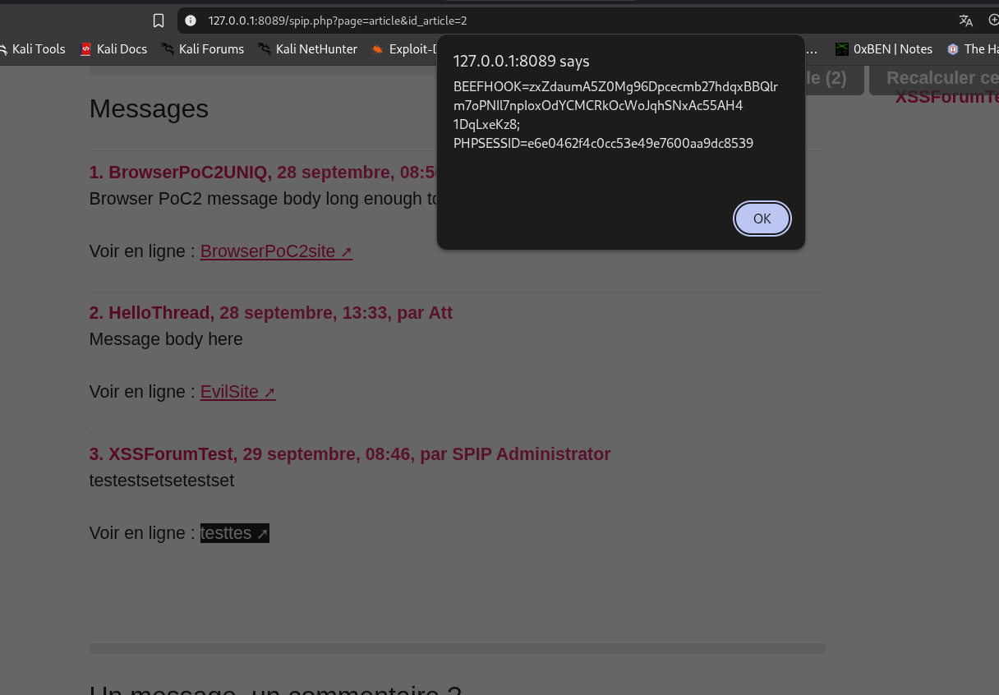

Description:
This is my another 0-day vulnerability, It was SPIP cms and vulnerability is unauthenticated XSS which makes it high level vulnerability because it is unauthenticated.
NOTE: I have installed SPIP to my local machine and then conducted penetration testing, meaning I attacked to target I own. Hack with responsiblities
Summary:
- Affected product: SPIP 4.4.25
- Vulnerability class: CWE-79 — Improper Neutralization of Input During Web Page Generation (Stored / Persistent Cross-Site Scripting)
- Researcher: Me ;) Doston Abdullayev
- Vulnerability: XSS
Steps to Reproduce
Condition: In order to exploit this vulnerability we need a forum which allows users to include a reference link or website URL in forum posts, this settings can be allowed in following order:
- Log in to the SPIP private administration area at /ecrire/
- Navigate to Configuration → Interactivity.
- Locate the Forum content settings.
- Enable the option that allows users to include a reference link or website URL in forum posts. Internally, this setting is identified as forums_urlref.
- Save the configuration.
NOTE: Ensure that at least one published article accepts public forum posts. The default posteriori mode is sufficient for this test. Meaning if website with SPIP 4.4.25 does not allow users to write refernce links to public forum we can not exploit XSS
Attacker steps:
- Open a published article that accepts public forum posts. In my example it was my local installation fo SPIP
- Locate the public forum submission form.
- Fill in the required fields:
- Votre nom: Anonym (Does not matter)
- Titre: Just a title
- Texte de votre message: Just a message
- In the Lien hypertexte section, enter the following values:
- Nom du site: Click here
- URL:
javascript:alert(document.cookie) - Click Prévisualiser to preview the forum post.
- On the preview page, click Envoyer to submit the post.
PoC

Thanks for reading!